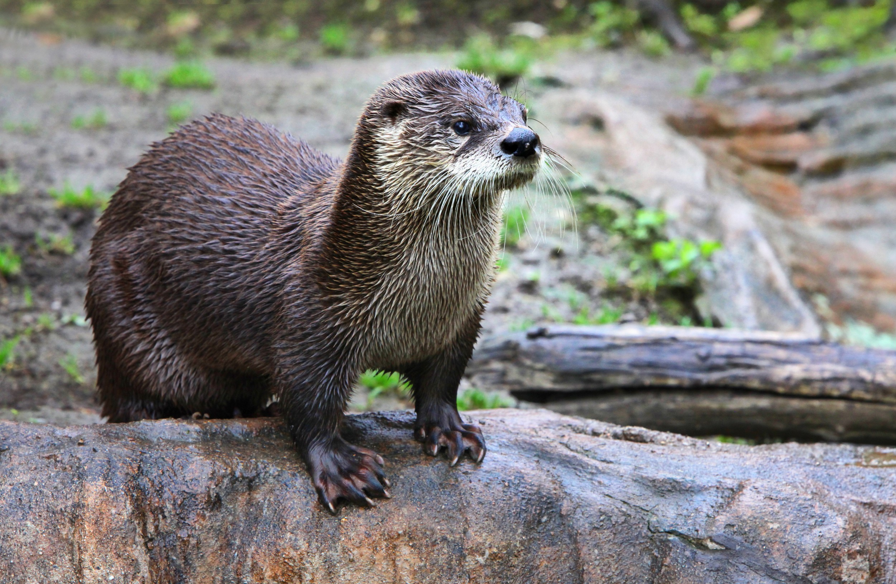
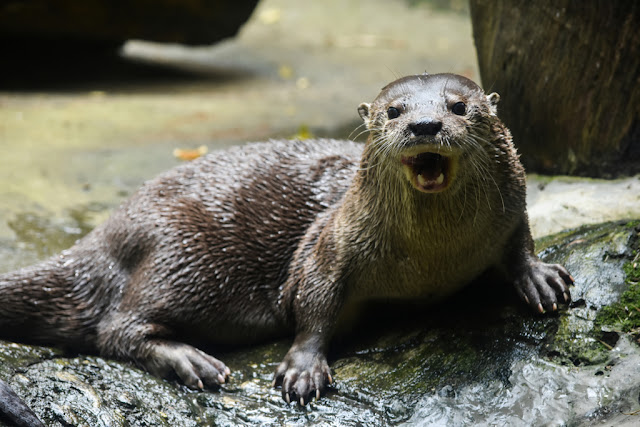
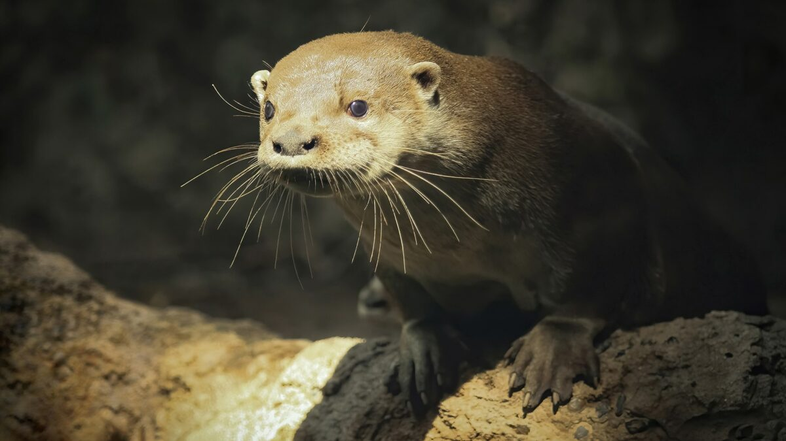
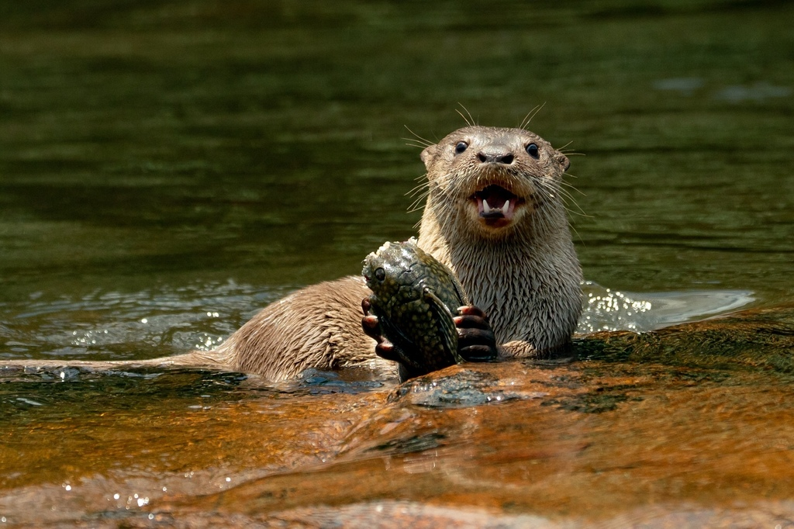
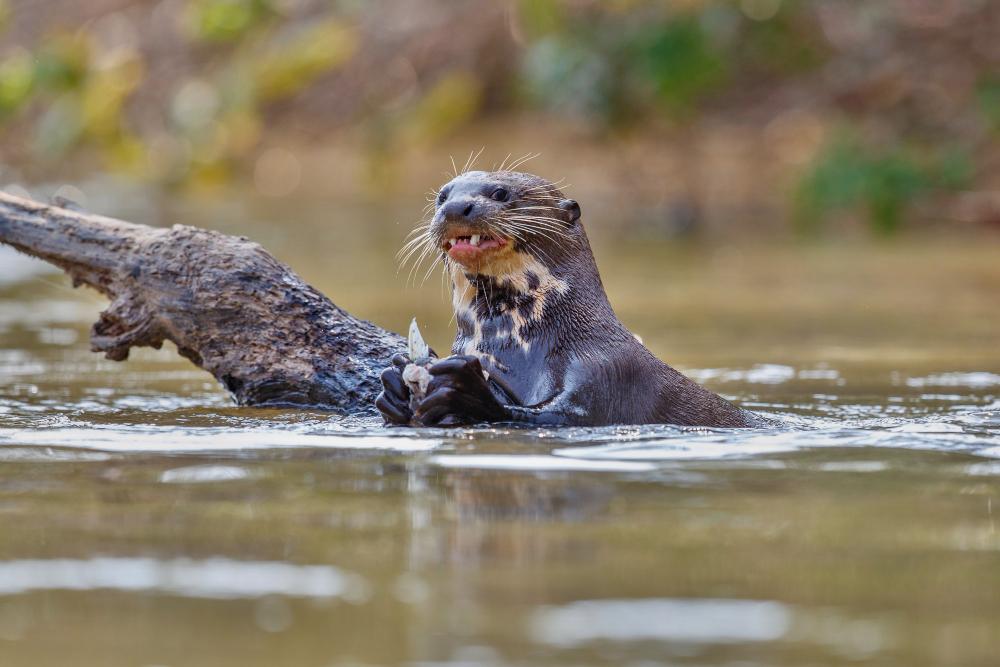
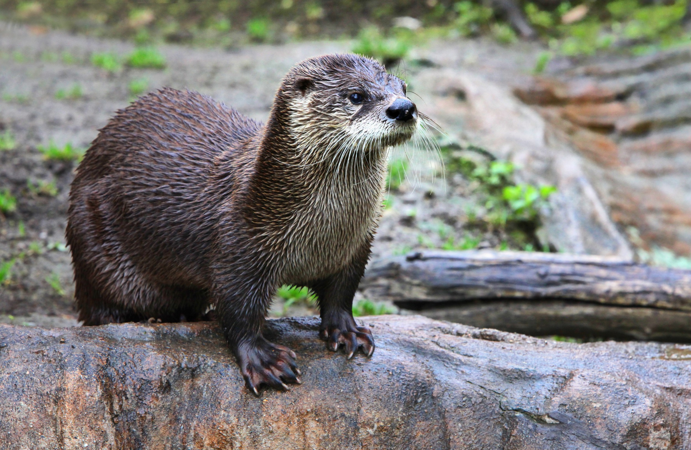
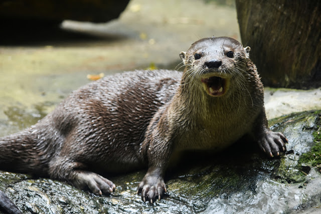
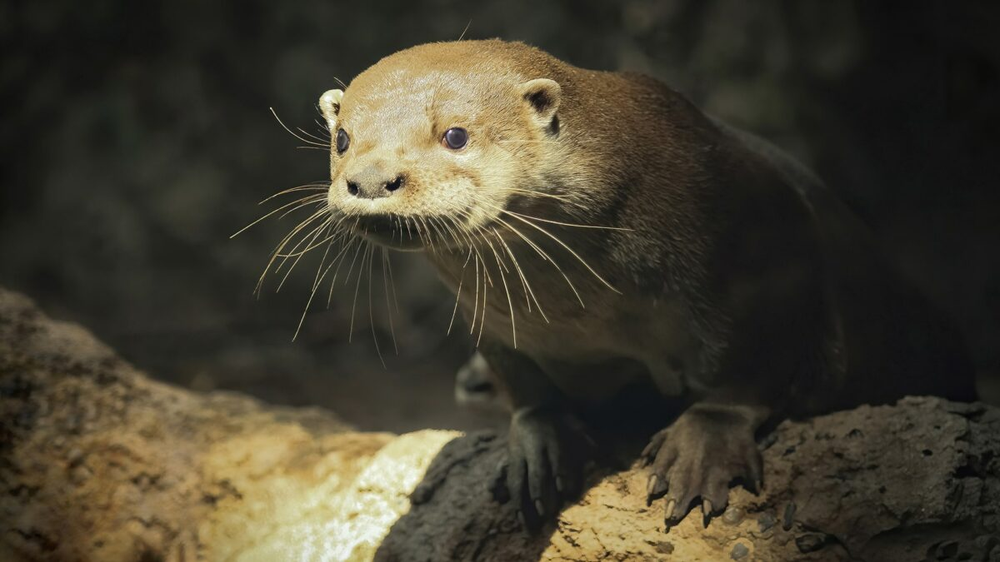
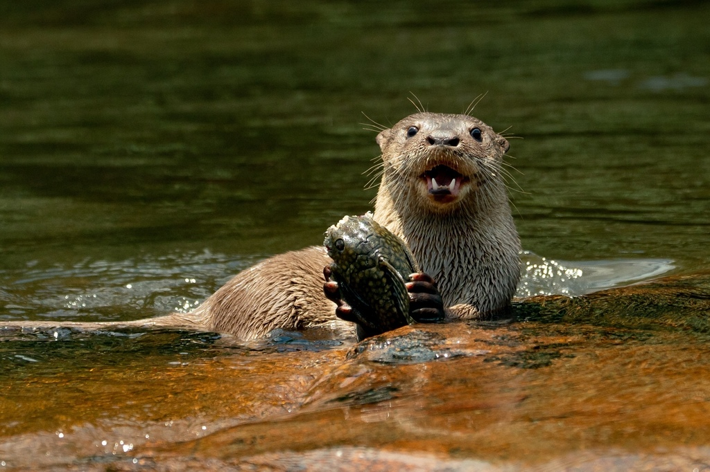
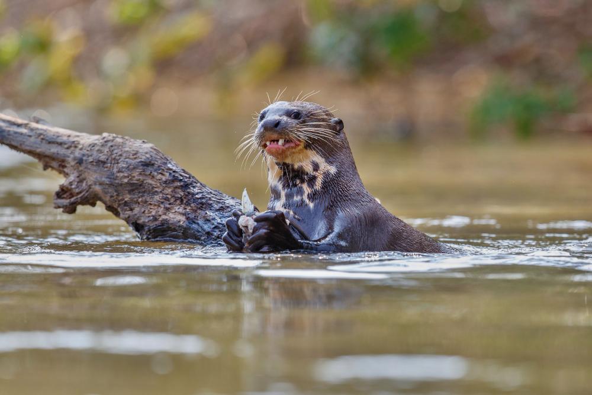

Nomes Populares: Conhecida também como "lontra-de-rio" ou "lontra-do-brasil"
Classificação Biológica
Domínio: Eukaryota
Reino: Animalia
Filo: Chordata
Classe: Mammalia
Ordem: Carnivora
Família: Mustelidae
Gênero: Lontra
Espécie: L. longicaudis
Nutrição Geral e Hábitos Alimentares
Tipo de Nutrição: Carnívoro
A lontra-de-rio alimenta-se principalmente de peixes, mas sua dieta também pode incluir crustáceos, pequenos mamíferos e aves aquáticas. Ela caça de maneira eficiente na água, utilizando suas patas adaptadas e habilidades de natação para capturar presas.
Morfologia
Pelagem e Corpo A pelagem da lontra-de-rio é densa e impermeável, predominantemente marrom com tons mais claros na barriga. O corpo é esguio e adaptado para nadar, com patas parcialmente webbed e uma cauda longa e achatada. Órgãos Respiratórios O aparelho respiratório da lontra inclui narinas, fossas nasais, cavidade nasal, faringe, laringe, traqueia e pulmões. Os pulmões são adaptados para suportar longos períodos submersa. Patas As patas são adaptadas para natação, com membranas interdigitais que ajudam na propulsão aquática.
Comportamento
A lontra-de-rio é um animal semiaquático e social. Vive em grupos familiares e é conhecida por suas habilidades de natação e mergulho. É um animal territorial e pode marcar seu território com fezes e secreções glandulares. A lontra também é muito brincalhona e utiliza atividades lúdicas para fortalecer laços sociais e praticar habilidades de caça.
Ocorrência
A lontra-de-rio é encontrada na América do Sul, principalmente em áreas de rios e corpos d'água em florestas e regiões de cerrado. Sua distribuição abrange países como Brasil, Bolívia, Paraguai e Argentina. Prefere habitats aquáticos com vegetação abundante e água limpa.
Mapa de Ocorrência
Reprodução
Sistema de Acasalamento: A lontra-de-rio é monogâmica e forma pares que geralmente permanecem juntos ao longo da vida. Reprodução ao Longo do Ano: A reprodução pode ocorrer durante todo o ano, com picos de atividade reprodutiva em épocas específicas dependendo da região. Gestação: A gestação dura cerca de 60 dias. Ninhadas: As fêmeas geralmente dão à luz de dois a quatro filhotes por ninhada. Os filhotes nascem cegos e dependem da mãe para cuidados e alimentação até estarem mais desenvolvidos.
 








